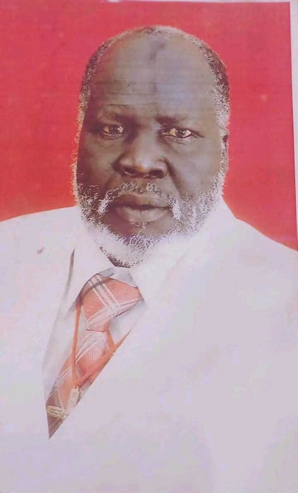
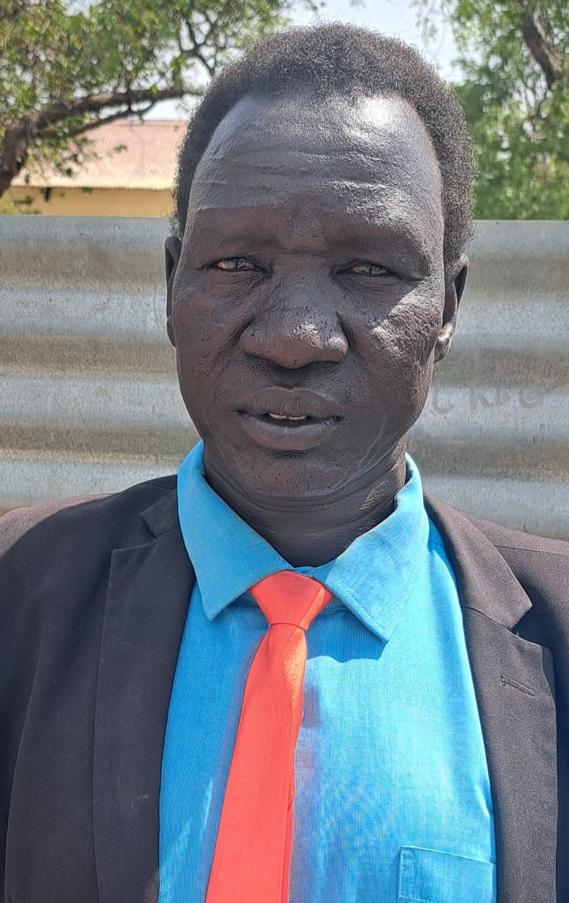
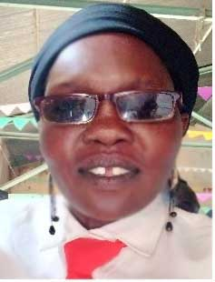
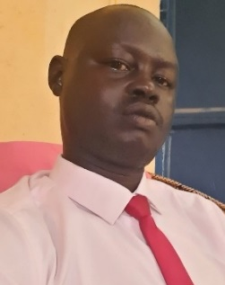

Group for Spiritual Songs / Akutnɔm De Diɛ̈t Ke Wei
Vissions
Spiritual Ministry: To usher in God’s presence, deliver his message, and set a spiritual atmosphere for worship.
Congregational Engagement: To lead and enliven the congregation’s seeing, making worship more confident and participatory.
Community and Growth: To provide a space for members to share gifts, grow spiritually, and build a nurturing, diverse community reflecting the church body.
Artists Excellence: To perform high quality music that glorifies God and edifies the listeners, using the full potential of the human voice.
Missions
Leading and Enlivening Congregational Songs: The primary mission is to encourage and support the congregation in singing, acting as a little choir to help the big choir find their voice.
Proclaiming the Gospel Through Songs: Choir members act as ministers, delivering biblical messages, hymns and spiritual truths that enhance the liturgy and reinforce the sermon.
Providing Musical Leadership for Worship: They lead the congregation in songs, specifically during liturgical, traditional, or complex music that requires extensive preparation, helping to foster an atmosphere of reverence and awe.
Serving as a sacrifice of praise: The choir offers their time, talent, and energy to God, serving as a model of worship for the congregation to follow.
Objectives
Lead Worship: guide the congregation in singing hymns and worship songs.
Inspire & Enliven: Make worship more engagement and provide spiritual uplift.
Perfume Complex Music: Sing challenging pieces that elevate the service and glorify God.
Create Atmospheres: Foster a sense of God’s presence and connect people to the divine.
Serve as Leaders: Provide as example for the vocal leadership, setting an example for the congregation.
Historical Background
Introduction
The Group for Spiritual Songs is a well-organized,
large group that presents, audio records, and prints hymns,
offers Bible studies and leadership training, and also graduates
a new generation every year.
Group for spiritual songs was formed in Malakal - Upper Nile State,
Maluth County in Presbyterian Church in 2018, the origin idea came
from Presbyterian Church youth by then.
Group for spiritual song started their activities in Anakdiar since 1992 - 1993.
Group for spiritual songs started their activities in Baliet County from 1994 - 1995.
In 1996 - 1997 some of youth started their journey from Blaiet to Sudan (Kenana), and started their activities
in Kanana in all churches and specially started their activities with other teachers and they are,
James Chol Yak, John Gieth Kiir, Gabriel Lual Wur and Jacob Minyang Monyjok, by then they left Sudan and come
back to South Sudan, and they started their normal activities in Baliet in 1998 – 1999 until 2000.
By then youth started their action strongly and they are, Jacob Minyag Monyjok, James Nyok Wal Kur, Deng Duot,
David Nyok Lul, Martha Nyanajith Monyjok Juach, Nyanching Deng Kur, Aben Dongei, Nyawal Bol Gach, Nyanyok David.
Until 2001 – 2002, then they continue with their work in Baliet until 2004, from that moment James Chol Yak Nyoot
started noted down some records and he recorded 342 gospel songs in Kenana and it was the first Book, by then the
teachers left Kenana to Baliet and they are, James Chol Yak Nyoot, John Gieth Kiir Kaam and Gabiel Lual Wur.
In 2007 – 2008 the group for spiritual songs started their activities again in Baliet under supervision of Pastor
Andrew Miyen Machol and pastor Arop Ngor Mel until 2009, 2010 and 2011 when South Sudan separated from North Sudan
(referendum) and they continue up to 2012 – 2013.In 2041 – 2015 the group for spiritual songs started another strong
strategy in Maluth County
The names of the evangelists who participate and support the ideas form 1992 - 1997 & current executives
2017 - 2018 lead by Ustaz/ Philip Thon Malith
Gabriel Monyjok Minyang.
John Gieth Kiir Kaam.
James Chol Yak.
Gabriel Lual Wur.
Nyok Tor Awan.
Abram Kuol Thon Deng.
Abram Adhou Deng Chuor.
Simon Monyjok Mabil.
John Biliu Aben.
John Akiim Monyjok.
James Nyok Deng.
Thon Monyjok Anei.
Peter Monybuny Aguer Deng.
Abram Kuol Chuang.
Abram Riak Agany.
James Akuch Lual.
James Dhieu Gau.
Simon Jul Kuol.
Yahya Akol Minyang.
Gorgy Biliu Aben.
James Nyok Wal Kur.
David Nyok Lul.
Phillip Thon Minyang.
Josephe Minyiang Ngang.
Rev.Phillip Riak Mading.
Rev.John Miyen Kulang.
R.Arob Ngor Mel.
Abram Chol Aguer.
Rev.Jacob Thon Agook.
Nyanuer Monyjok.
El.Peter Anguei Tor.
El.Abiel Thon.
Robert Chol Ayat.
Jacob Minyang Monyjok.
Martha Nyanjith Monyjok.
Peter Anguei Tor.
Pastor Philip Diu.

Evan. John Minyang Kuot
Late, elder John Minyang Monyjok Kuot Monykaal
Evangelist John Minyang was born in 1/1/ 1946 in Bil Ajubu
Boma Riangnom Paan Kiir Awuoch Panyany Ajubu sub-clan, Payam
Nyokrial Baliet County Upper Nile State.
He is a Christian, denominator protest Presbyterian Church of South
Sudan, baptized by Pastor Philip Chan Monyjok, Adong congregation in 1973.
Education background,
Bahri evening School from 1957 – 1962 and Bahri training centre from 1963 – 1964
Evangelist John Minyang, was baptized at the age of 17 years old by then he was called
by God after marred two wives the first wife Elizabeth Achol Chan from Khorfulus,
survive with one child Mr. Akiim John Minyang the elder son of John Minyang and the
second wife Nyankiir Dau Akol, Pajueech Paan Akuei, Baliet sub-clan, survive with six children
Mr. Yai John Minyang Kuot, Mr. Monykaal John Minyang, Ms. Athiei John Minyang, Ms. Nyanlong
John Minyang, Ms. Nyanamat John Minyang, Ms. Awau John Minyang.
In April 1987 the spirit of God inspired believer Simon Duot Kiir and composed 3 gospel songs
in Dinka Padang language when he was in the prison in Ulang County Nuer district, the believer
Simon Duot got a vision from God saying, go to Baliet County and let the man with white clothes
volunteer evangelist John Minyang Kuot, let him write down your 3 gospel songs, the believer
Simon Duot left Ulang to Baliet immediately committing himself and met evangelist John Minyang
Kuot and he explained the vision he have seen, after the meeting the evangelist John Minyang
Kuot accepted the vision that came from God and he wrote all 3 gospel songs in 1987 follow
by other 1387 songs within the period of 24 years 1987 -2014 in Dinka Padang language and other
local languages, he has printed the first edition that contained 460 gospel songs called
Awrek De Diɛ̈t Ke Nhialic (Hymn) in Sudan.
According to his record the message 43 in 19th of September 1987 the voice of God came to
evangelist John Minyang Kuot in Bil Ajubu congregation sending him to proclaim the new message
of peace for Sudan in Jesus Christ, the voice was saying first go to Ulang and tell them the
message of peace then come back and take the same message to the president of Sudan to stop
ongoing civil war immediately without any condition and proceed to Jerusalem, the special
gift from Sudanese with a flowing trump, the group of believers accepted the called and joint
John Minyang Kuot to be the massagers of peace for all Sudanese people, peace mission or journey
of John Minyang Kuot and his team, on 25th October 1987 evangelist Philip Thon Ayuel was sent to
met the government army forces commander Mustafa Omer in Adong military barracks to see a
permission to Ulang, on 11th November 1987 the missionaries lead by evangelist John Minyang
Kuot started their journey from Rianhom Baliet County to Ulang and they have been welcomed and
received warmly by Presbyterian church leaders in Ulang lead by evangelist Peter Gach Lual,
Marou and Rebecca Nyayuaal who were there and other believers, they have spend 20 days preaching
the word of God there.
On 9th June 1992 the 27 members of peace team have been released and given transportation needs by
Hon. Mongo Ajak the Upper Nile State governor by then, and they arrived to Khartoum on 13th June
1992, in 1997 the 17 members of peace team met with his Excellency Omer Hassan Ahmed El-Bishiir
the president of Sudan at that time to negotiate about ongoing civil war for them to stop the
conflict immediately, on 19th March 2014 the evangelist John Minyang has been called by God and
passed away through natural death leaving behind his family and whole team with a good huge for
them to continue proclaiming new massage of peace under leadership of his wife deaconess Elezabith Achol Chan
and assist by her elder son Akiim John Minyang and Yai John Minyang, God give and God
has taken away let the glory be the of the Lord, Amen.
On 12th May 2023 the team were relieve by God from Jebel Aulia (Khartoum)and come back to Malakal
after 36 years initiating peace process message among Sudanese and South Sudanese people.
No
Name
Position
1
Philip Thon Malith
Chairman
2
James Mayong Thon
Deputy Chairman
3
Thomas Mading Nyok
Secretary General
4
John Gieth Kiir
Deputy Secretary General
5
Martha Nyanajith Monyjok
Treasure
6
Miyen Joseph Riak
Deputy Treasure
7
Gabriel Lual Wuor
Member in executive committee
8
James Monyjok Dau
Member in executive committee
9
David Makur Ayuat
Member in executive committee
10
Peter Wal Kiir
Member in executive committee
11
Adhieu David Kiir
Member in executive committee
12
James Aleu Monywiir
Member in executive committee
Our Activities
We offer leadership trainings every year with valid certificates;
we also train local and international gospel songs and different dancing styles
according to the song, local or international.
We schedule our visit timetable very year, as we normally visits Christians in
different churches in (HQs) and all our branches, Akutnɔm De Diɛ̈t Ke Wei visits
every branches in different locations as part of encouragement and make them
strong in faith, Akutnɔm prepare an emergency prayers and support as it’s the
greatest role, the members have the freedom of teaching in every church as they
have authorized certificates based on their qualifications and valid IDs.
Akutnɔm have a lot of goals to achieve as some of them are done and they are
still going to achieve the remaining goals, the group started recording songs
now they are done with phase one and they are done with first and second shooting
of videos check the (link), Akutnɔm has printed the hymn book contained more than 439
gospel songs as fist edition check the link, and the group are still collecting the
new songs and editing the old songs, the bible study is the spine of the group.
The leaders
Dupiööc/ Philip Thon Malith
The current Chairman of the group, Who was elected in 2018, Mr. Philip plays
a big role in the group with wisdom given by God on how to lead the group forward no matter
how heard the situation is evangelist Philip doesn’t looks back, as its well known the man of
God and good leader at the same time.
The group for spiritual passed across challenges and circumstances but the leaders didn’t give up one
day lead by Mr. Philip Thon Malith the dynamic of the group follow by the executive and the entire group who
their hands together for a better future of the youth.
With the strength of God the group for spiritual songs was created in a critical situation in 2018 but God used his wisdom until
today the group is permanent with together with all branches and moving ahead with all plans and achieving the goals.
Dupiööc/ Thomas Mading Nyok
The General Secretary, Mr. Thomas Mading one of the hard working executive members who play a great task in the entire group,
the core administration function involves managing the group records group meetings maintaining documentation, and ensuring all operations.
Participate in strategic planning, and offer guidance on group best practices, as the central information hub, liaising between the boards, communities.
Mr. Thomas with his effort and strength he has completed typing the part of hymn book, Diɛ̈t Thɛ̈ɛ̈r Ku Diɛ̈t Jööt Ke Jëëŋ until printing of the first edition of the book.

Dupiööc/ John Gieth Kiir
The deputy General Secretary known initially as John Gieth Kiir Kaam, the spiritual advisor and one of the strongest evangelists who play a big role in the society
teaching and advising coaching all believers, he is one of the evangelists who moved a lot within South Sudan during civil war with other
missionaries teaching the words of God in South Sudan and Sudan as well in Kinana.
Evangelist John is a spiritual songs composer as a gift from God, in the hymn book known as Diɛ̈t Thɛ̈ɛ̈r ku Diɛ̈t Jööt Ke Jëëŋ he is the most
person who has more gospel songs, some audios are above the section.

Dupiööc/ Martha Nyanajith Monyjok
The key elements of the group, Martha is one the strong teachers since 1990s teaching and coaching the believers as well and she started leadership when she was at young age
composing songs and sings with a good tune that’s a great gift of God.
The group treasure, she manages group financial health, overseeing banking, and bookkeeping while ensuring financial records are accurate and transparent.
This includes financial oversight, and fundraising, financial planning, and reporting to stakeholders such as presenting financial reports at meetings and the annual general meeting.
She collaborate with other members to create and manage budgets, and advice on the group financial status, that includes presenting the accounts at the annual general meeting

Dupiööc/ Miyen Joseph Riak
Mr. Miyen Josph, the deputy treasure who play a great role in the group behalf of the secretary finance in her absence, Mr. Miyen usually with his effort he worked not behalf of his
finance secretary only he plays a wonderful role in the group as whole, supporting group with ideas and other important activities who really part of the group success until today.
Mr. Miyen helps the general secretary during typing of the hymn book specially the old part known as Diɛ̈t thɛ̈ɛ̈r ke Jëëŋ, it was one of his big achievement, he also take his time traveling across
and pushing all activities as part of his strength.
Mr. Miyen assists the treasurer in overseeing group’s financial operations by managing daily tasks, supervising staff, and handling responsibilities like revenue collection, accounting, financial reporting,
and preparing for audits.
Supervising and training finance staff, ensuring financial policies and internal controls, maintaining records for trust funds and reserve accounts, preparing financial reports for senior leadership and other stakeholders.
Dupiööc/ Gabriel Lual Wuor
One of the great symbols who play a great role since the formation of the group, Ustaz Lual Wuor is gospel songs composer, he has a lot of songs well known in different churches in Dinka.
Ustaz Gabriel Lual Wuor started his journey with the group since 1990s with confident and his strength, according to the records Gabriel Lual among the top founder and supporters spiritually and physically.
Dupiööc/ James Monyjok Dau
Ustaz James Monyjok Dau, one of the executive members, active and responsible member.
Ustaz James one of the strong members in the group who really play their role officially with confident, as one of the most powerful youth in the group and PIGI representative as well, good communication and message composer.
Dupiööc/ David Makur Ayuat
One the great teachers who made their efforts to establish this group, he is a great actor, teacher, and leader who lead the group in education and training in the field, and many generation emerged before and after the founding of the group.
Ustaz. David Makur Ayuat is one of the foundation stones who gave his efforts and made a great struggle against Devil and educating believers. He used his personal skills to attract people to Christ and achieved it without a doubt.
Ustaz/ David Makur Ayuat he is an evangelist serving his Lord in FEBAC Church.
Dupiööc/ Peter Wal Kiir
Ustaz Peter Wal Kiir, a passionate, empathetic leader who makes learning engaging and relevant, building strong relationships by understanding group needs adapting methods creativity, and inspiring confidence,
turning complex subjects into accessible adventures while fostering a supportive community and the group where everyone feels valued and challenged to grow.
Dupiööc/ Adhieu David Kiir
Ustaz Adhieu David Kiir, describes her role not just as a singer, she’s a responsible choir member in the church. As an active member, she participates in regular, intensive rehearsals, often attending Sunday morning practices.
Beyond singing in the main choir, active members like Adhieu act as integral parts of the liturgical celebrations, including major feasts such as Christmas and Easter.
Dupiööc/ James Aleu Monywiir
Ustaz James Aleu Monywiir, One of the active members who play his role a lot, many missionaries begins their career by serving in their home church. They build relationships within their community and then transition into larger endeavors.
James has started his career earlier and with confident he manages to achieve the strength and power by practicing, and reaching the far areas for him to perform his duty as a missionary.
Erving in offers a unique opportunity to share God's love in a region rich in history and natural beauty. From bustling cities to quaint coastal towns, there are countless ways to make a difference.